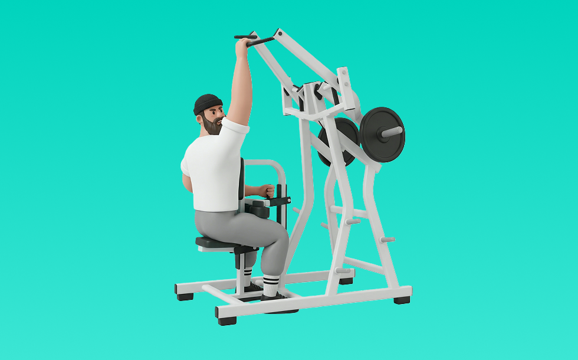

アイソラテラル・ワイドプルダウン

アイソラテラル・ワイドプルダウンとは、マシンを使ってワイドグリップで「引く」動作を行い、主に背中（広背筋、僧帽筋、菱形筋）と腕（上腕二頭筋）を鍛える筋力トレーニングです。左右独立で動作でき、弱い側も意識して揃えやすいのが特徴で、胸を張ってバーを鎖骨付近へ引き下げ、コントロールして戻す動作を繰り返します。これにより、背中の幅づくりと左右差の改善が期待できます。
- 対象部位
- 背中
- 器具
- マシン
- 記録形式
- 重量・回数
- 別名
- アイソラテラルワイドプルダウン / ワイドプルダウンマシン / iso lateral wide pulldown / iso-lateral wide pulldown
YouTube動画
-
【背中の基本】初心者でも背中に効くラットプルダウンを解説します
-
【筋トレ悪いフォーム解説】ラットプルダウンで広背筋へ効かせるテクニック！
-
【広背筋 or 僧帽筋？】同じ種目で効かせ方が激変！アイソラテラルロウ徹底解説
-
筋トレ初心者は絶対にラットプルダウンを高重量でやるな！もっとやるべきことが沢山ある。
-
【筋トレ解説】背中のオススメ種目！天野式フロントプルダウンのやり方！
-
【HAMMER】アイソラテラルプルダウン
-
【筋トレ】難しい背中のトレーニングもこれで完璧！ラットプルダウンの動きを細かく解説します！
-
体の硬い人が選ぶべきラットプルダウンのアタッチメント【MAG】
-
エニタイムフィットネス三田 ラットプルダウンマニュアル
-
【2024年版完全解説】背中を一番進化させた種目は間違いなくこれです
-
ラットプルダウンで広背筋を鍛えるのに最も適したグリップは？【筋トレ】
-
背中 筋トレマシン使い方【アイソラテラル・フロントラットプルダウン（HAMMER STRENGTH）】
YouTubeショート
-
ラットプルダウンでより効率良く鍛えるためのテクニック🔥🔥
-
ひろゆきボイスでラットプルダウン解説 #筋トレ女子
-
このラットプルダウンはやめろ！#shorts
-
みなさんはフロントプルダウンしっかりできてますか？持田選手（おかずもち）が広背筋に効くトレーニングをレクチャーしてくれました！#筋トレ #volix #背中トレ #ちょこっと惜しい #広背筋
-
【IFBB PRO 上里選手】筋トレ初心者必見!!背中種目で注意すべきこと
-
背中が急成長するラットプルダウンの基本
-
このマシンめちゃいい🔥#ワイドプルダウン #背中 #背中トレ #背中トレーニング #筋トレ #筋トレ好きと繋がりたい
-
横川君から学ぶ背中トレ
-
持田選手とぶーちゃんにラットプルダウンについてレクチャーしていてもらいました！次はどの種目の解説をやってほしいかコメントしてね！#筋トレ #volix #トレーニング #ちょこっと惜しい
-
【正しい筋トレレクチャー】ラテラルハイローで背中を効かせるコツ #ショート
-
最後の種目は締めの種目に最適！#筋トレ大学生 #筋トレ男子 #gymmotivation #fitnessmotivation
-
背中を最大限に鍛える種目3選【筋トレ】
-
上級者と初心者のラットプルダウンの違い
-
【ラットプルダウン】背中に効かない3つの間違い #パーソナルトレーナー #筋トレ #ラットプルダウン #フィットネス
-
筋トレ初心者必見‼︎ラットプルダウンの極意 #筋トレあるある #筋トレ初心者 #背中トレ
-
フロントプルマシンの使い方って？持田選手（おかずもち）がフロントプルダウンのやり方を2種類レクチャーしてくれました！#筋トレ #volix #広背筋 #ちょこっと惜しい #背中トレ
-
[SYNERGY. Fitness Studio] フロントプルダウンのやり方 #筋トレ #エクササイズ
-
【両店共通】フロントプルダウン 使い方動画
-
アイソプルダウンでホールドを入れると広背筋にしっかり効いて気持ち良いよ
-
プルダウン胸の開きと座る位置
-
【ジムにこういう奴おらん？】ラットプルダウンをシーソーみたいにする奴
-
【SGIR】広背筋 フロントプルダウン 種目解説
-
成長を感じたラットプルダウンのやり方※エゴイスト
-
みんな大好きラットプルダウン3種目#bodybuilding #workout #筋トレ #fitness #ダイエット
-
背中トレが苦手な人必見！ラットプルダウンのポイント
-
アイソラテラルワイドラットプルダウン
-
ハンマーストレングス アイソラテラルフロントプルダウン #ナチュラルトレーニー #アンチドーピング
-
どこでもできる最高なpullトレーニング
-
【忙しい人向け】1日30分で鬼の背中を作るトレーニング#shorts #youtubeshorts ##筋トレ大学#ダイエット#筋トレ
-
ワイドプルで背中を仕留める #shorts
-
俺みたいなデカイ背中を作るオススメトレ5選！#shorts
-
How to Properly Use The Isolateral High Row Machine With Good Form (Exercise Demonstration)
-
初心者必見！ラットプルダウンのテクニック！ #shorts
-
アイソラテラルフロントラットプルダウン
-
自己ベスト80kgなるか、、、？ #Shorts #筋トレ女子 #ベンチプレス
動作方法
- 胸を軽く張り、肩を下げて構える
- 肘を引く意識で、狙う部位に負荷を乗せる
- 戻し動作もコントロールして、負荷を抜かない
動作ポイント
- 腰を反りすぎない
- 肩が前に出ないようにする
- 勢いで引かない
ワンポイントアドバイス
- 腕ではなく背中で引く感覚を優先する
- 反動が増えたら重量を一段下げる
目的別回数設定
目的や体力に応じた一般的な目安です。無理のない範囲で調整してください。
- 筋力アップ
- 1〜5回
- 筋肥大
- 6〜12回
- 持久力アップ
- 13〜20回
YouTube動画について
動画はYouTubeの公開情報をもとに表示しています。内容は投稿者によるもので、Biggrによる監修ではありません。
アプリを入手
筋トレやトレーニングの記録はBiggrにお任せください。今すぐ無料で使い始められます。